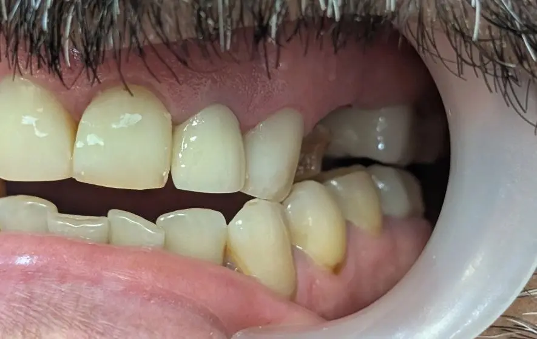

نسخه استخراجشده؛ ترجمه یا تأیید علمی انجام نشده است. وضعیت: captured
بیمار با شکایت از تماس آزاردهندهی دندانهای نیش هنگام حرکات طرفی فک آمده است. شکایتش مبهم نیست؛ دقیق و موقعیتمحور است: «وقتی فکم را به چپ و راست میبرم، نیشهایم اذیت میکنند.» اخیراً برای دندان ۶ بالا چپ روکش جدیدی ساخته شده است. ربط یک روکش مولر به کانینها چیست؟

در نگاه اول ارتباط مستقیمی بین روکش مولر و درگیری کانینها به نظر نمیرسد؛ اما در اکلوژن، هیچ تغییری «موضعی» نیست.
این عدمتقارن بهخودیخود لزوماً پاتولوژیک نیست؛ اما کنار شکایت تازهظهور بیمار پس از سمان شدن یک روکش جدید، روایت تغییر میکند.
بهاحتمال زیاد درمانگر قبلی روکش دندان ۶ را در حرکت طرفی خارج از تماس تنظیم کرده است؛ تصمیمی که در ظاهر «ایمن» به نظر میرسد، ولی در عمل الگوی تماسهای طرفی آن سمت را بازنویسی کرده است.
بیمار ناگهان «اکلوژن خودش را حس میکند»؛ و این حس، صرفنظر از اینکه از نظر مکانیکی چقدر شدید باشد، آزاردهنده است. با یک ترمیم تکواحدی، نهفقط توزیع نیرو، بلکه نقشهی ادراکی بیمار از فک خودش به هم خورده است.
شکایت از کانینها تظاهر بالینی همین بازنویسی است؛ نه لزوماً به این معنا که کانینها بیشازحد بار میگیرند، بلکه به این معنا که مغز بیمار الگوی تماسی این سمت را دیگر «خودی» نمیشناسد.
سؤال اصلی این نیست که «روکش بلند است یا کوتاه؟»، بلکه این است: «این روکش الگوی آشنای سیستم نوروماسکولار بیمار را حفظ کرده یا مختل کرده است؟»
تغییر در یک واحد، حتی یک روکش تکدندانی در خلف، میتواند نقشهی پروپریوسپتیو کل قوس را به هم بزند؛ و علامت اغلب نه از جایی که بار بیشتری گرفته، بلکه از جایی ظاهر میشود که مغز بیمار برای اولین بار آن را حس میکند.